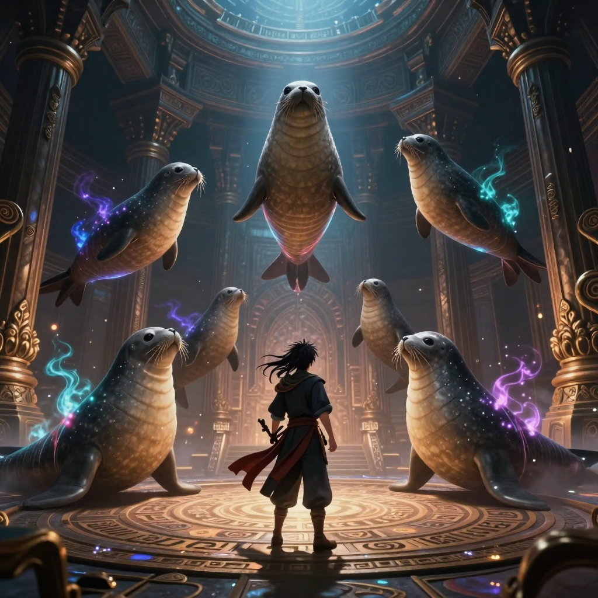

Page 26 / 40
La porte des anciens

La clé ouvre une chambre contenant un artefact : le Cœur d'Aube. Il peut restaurer un ancien pacte, mais seulement si quelqu'un accepte d'en porter le prix.
🔒 Le Sceau des Anciens
La porte est scellée par un sceau runique. Les Anciens en révèlent l'ordre : mémorise la séquence, puis reproduis-la en cliquant sur les runes. Trois manches te séparent du Cœur d'Aube.
Le Cœur d'Aube est scellé derrière la porte.